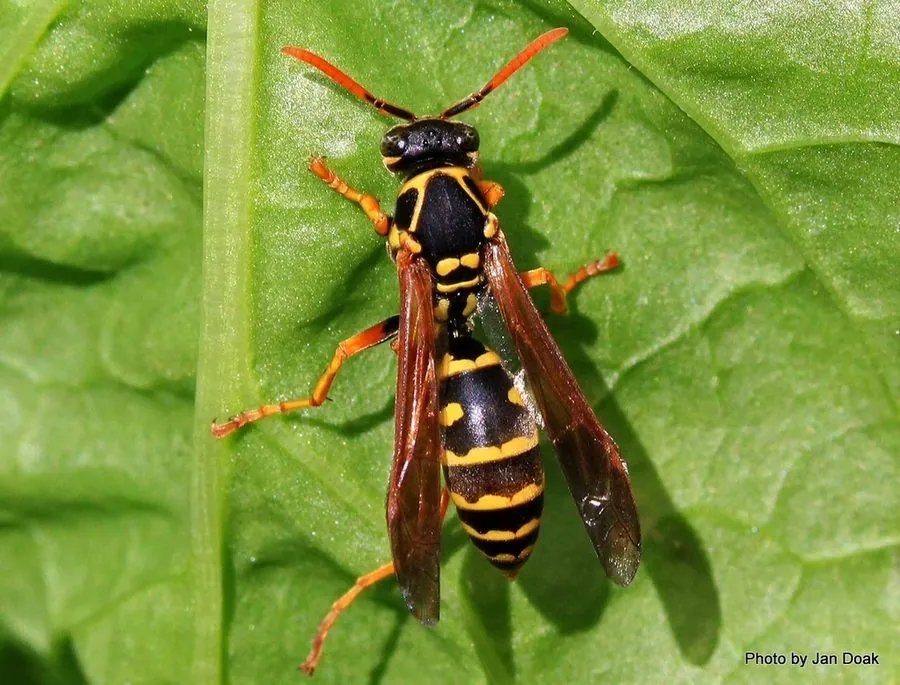

昆虫 · 动物界
中华马蜂 Polistes chinensis

东亚常见的胡蜂，蜂巢由纸状物构成、呈莲蓬状悬挂，雌蜂首领建立群体，工蜂共同抚育幼虫，受扰时会蜇人。
- 分类
- 门节肢动物门纲昆虫纲目膜翅目科胡蜂科属马蜂属
- 栖息环境
- 林缘、农田、庭院与建筑物附近，蜂巢悬挂在树枝或屋檐下
- 地理分布
- 东亚，中国大部分地区及日本、朝鲜半岛
- 保护级别
- 暂无评估
物种志
中华马蜂成虫体长 1.3–1.8 cm，体形细长。它的体色为黑褐色与黄色相间，腹部有黄色横带，翅透明，足细长；雌蜂尾端有螫针，雄蜂没有；触角橙黄色，是区分马蜂种类的重要特征之一。
中华马蜂分布于中国、日本、朝鲜半岛，栖息于林缘、农田、庭院和建筑物附近。它以纸状物筑巢，蜂巢由咀嚼木纤维混合唾液制成，呈莲蓬状通过短柄悬挂在树枝、屋檐或窗框上。春季越冬雌蜂独自建立蜂巢并产卵，工蜂羽化后承担觅食、喂幼虫和修巢工作，秋季产生新的生殖个体。马蜂捕食毛虫等昆虫，也取食花蜜和果实，受惊扰时会群起攻击并蜇人，蜂毒可引起红肿疼痛甚至过敏。它是常见的捕食与授粉昆虫，但靠近蜂巢时需保持距离。
形态与习性
- 食性捕食毛虫等昆虫，也取食花蜜和果实
- 体长成虫 1.3–1.8 cm
- 蜂巢嚼碎木纤维制成纸状巢，呈莲蓬状悬挂
- 社会结构雌蜂首领建群，工蜂共同抚育幼虫
- 繁殖春季越冬雌蜂独自建巢产卵，秋季产生新生殖个体
- 防御受扰时群起攻击蜇人，蜂毒可致红肿疼痛
趣味知识
- 中华马蜂的巢是用咀嚼的木纤维制成的纸状巢。
- 春季由一只越冬雌蜂独自建巢，工蜂羽化后共同协作。
- 马蜂捕食毛虫等害虫，但也取食花蜜和成熟果实。
- 受惊扰时会群起攻击蜇人，靠近蜂巢需保持距离。